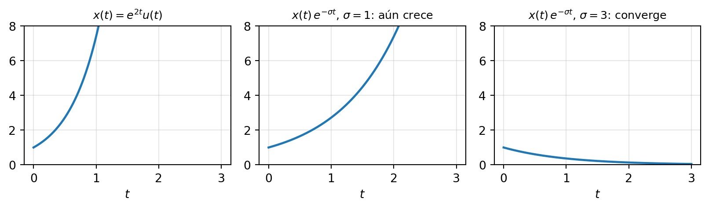
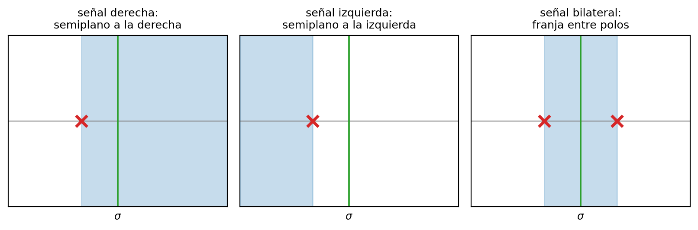
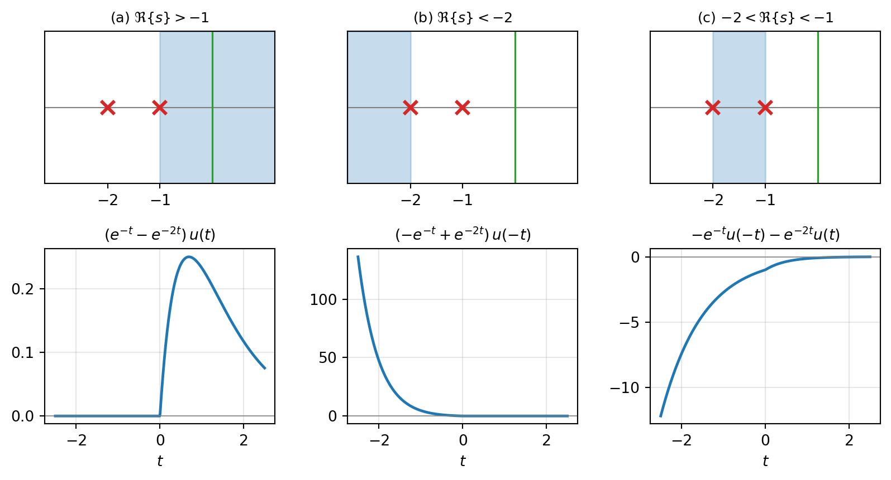
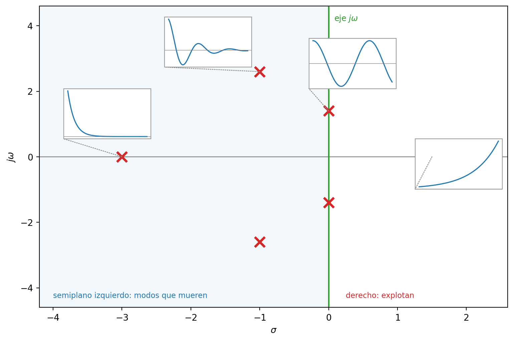
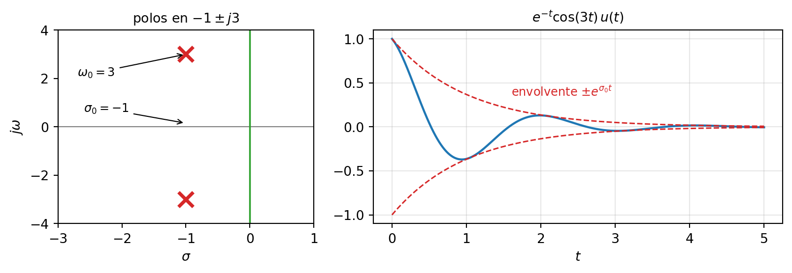
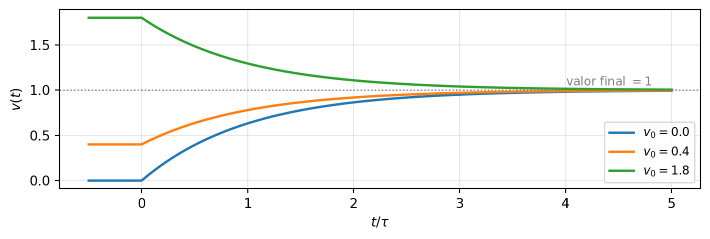

4 La transformada de Laplace
NotaObjetivos del capítulo [U4.1–U4.5]
Al terminar este capítulo podrás: calcular transformadas de Laplace bilaterales con su ROC, y explicar por qué la fórmula sin la ROC es media respuesta [U4.1]; invertir una X(s) racional por fracciones parciales, eligiendo la versión causal o anticausal de cada término según la ROC [U4.2]; leer el plano s como un mapa: predecir la forma de la señal mirando solo la posición de sus polos, y decidir estabilidad y causalidad desde ahí [U4.3]; resolver EDOs lineales con condiciones iniciales usando la transformada unilateral [U4.4]; y conectar Laplace con Fourier: cuándo vale X(\omega) = X(s)\big|_{s=j\omega} y cómo se analiza un sistema completo desde su H(s) [U4.5].
Ya usaste Laplace en tu curso de ecuaciones diferenciales: la versión unilateral, con tablas y sin que nadie mencionara una “región de convergencia”. Este capítulo no repite esa receta — la explica. Al final vas a entender qué estabas haciendo.
4.1 La señal que Fourier no puede ver
En el capítulo 1 (Sección 1.4.1) te presenté la señal más importante del curso: la espiral e^{st} con s = \sigma + j\omega, que gira a \omega rad/s mientras crece o decae según \sigma. Y dejé una promesa anotada: ese parámetro s dará nombre al “plano s” de Laplace. Este capítulo paga esa promesa. Hoy le ponemos casa al número s.
El problema. La transformada de Fourier exige, en la práctica, que la señal sea absolutamente integrable: \int |x(t)|\,dt < \infty. Eso deja fuera a señales completamente razonables:
- u(t) — encender un interruptor y dejarlo encendido;
- t\,u(t) — una rampa;
- e^{t}u(t) — la respuesta de un sistema inestable (¡justo la que más nos urge analizar!).
La idea brillante — y es una sola idea: si x(t) crece demasiado, multiplícala por una exponencial que decae más rápido, e^{-\sigma t}, y toma Fourier de eso:
\mathcal{F}\{x(t)\,e^{-\sigma t}\} = \int_{-\infty}^{\infty} x(t)\,e^{-\sigma t}e^{-j\omega t}\,dt = \int_{-\infty}^{\infty} x(t)\,e^{-(\sigma + j\omega)t}\,dt
El exponente que aparece solo es… s = \sigma + j\omega. Amortiguar y transformar es lo mismo que transformar contra la espiral e^{st} completa, no solo contra el fasor e^{j\omega t}. El parámetro \sigma es el factor de convergencia: el precio que pagamos por poder ver señales que crecen.
ImportanteDefinición: transformada bilateral de Laplace
X(s) = \mathcal{L}\{x(t)\} = \int_{-\infty}^{\infty} x(t)\,e^{-st}\,dt, \qquad s = \sigma + j\omega La integral converge solo para algunos valores de s; ese conjunto es la Región de Convergencia (ROC), y es parte de la respuesta, no un adorno.
Dos lecturas de la misma fórmula, ambas valiosas:
- X(s) es una familia de transformadas de Fourier. Para cada nivel de amortiguamiento \sigma, la línea vertical \Re\{s\} = \sigma contiene la transformada de Fourier de la versión amortiguada x(t)e^{-\sigma t}. En particular, si la línea \sigma = 0 — el eje j\omega — está dentro de la ROC, ahí vive la transformada de Fourier de x(t) (los detalles finos, en la Sección 4.6).
- X(s) mide el parecido de x(t) con cada espiral e^{st}, igual que Fourier mide el parecido con cada fasor. Por eso el plano completo: cada punto del plano s es una espiral distinta.
La imagen que ordena el capítulo entero: Fourier camina por la costa (el eje j\omega) de un continente; Laplace nos da el mapa del continente completo (el plano s), con sus montañas — los polos — y sus valles — los ceros. Lo que se ve desde la costa está determinado por la geografía del interior. A esa geografía dedicaremos la Sección 4.4.
4.2 La ROC es parte de la respuesta
Tres cálculos por definición bastan para descubrir todas las reglas del juego. Son los tres ejemplos de la unidad; vale la pena seguirlos con lápiz.
Ejemplo 1 — señal derecha (vive hacia t = +\infty). Sea x(t) = e^{-at}u(t):
X(s) = \int_{0}^{\infty} e^{-at}e^{-st}\,dt = \left[\frac{e^{-(s+a)t}}{-(s+a)}\right]_{0}^{\infty} = \frac{1}{s+a}
El límite en t \to \infty se anula solo si \Re\{s+a\} > 0. La respuesta completa es el par:
e^{-at}u(t) \;\longleftrightarrow\; \frac{1}{s+a}, \qquad \text{ROC: } \Re\{s\} > -a
Este par es el ancla del capítulo: casi todo lo demás se reduce a él. En el plano s: un polo (×) en s = -a, y la ROC es el semiplano a la derecha del polo. Nota que funciona para cualquier a: si a = -2 (la señal creciente e^{2t}u(t) de la figura anterior), la ROC es \Re\{s\} > 2 — Laplace la ve sin problema; Fourier no, porque el eje j\omega queda fuera de la ROC.
Ejemplo 2 — señal izquierda (vive hacia t = -\infty). Sea x(t) = -e^{-at}u(-t):
X(s) = -\int_{-\infty}^{0} e^{-(s+a)t}\,dt = \frac{1}{s+a}, \qquad \text{ROC: } \Re\{s\} < -a
donde ahora es el límite en t \to -\infty el que impone la condición, con la desigualdad al revés.
Detente aquí, porque este es el momento más importante de la unidad: dos señales que no se parecen en nada — una vive en el futuro, la otra en el pasado — tienen exactamente la misma fórmula \frac{1}{s+a}. Lo único que las distingue es la ROC.
AdvertenciaLa moraleja de la unidad
La fórmula X(s) sola no identifica a la señal. El par (fórmula, ROC) sí. Escribir una transformada de Laplace sin su ROC es dar la mitad de la respuesta — y así se corrige en la I3.
Ejemplo 3 — señal bilateral. Sea x(t) = e^{-a|t|} con a > 0 (decae hacia ambos lados). Se parte en dos mitades y se transforma cada una:
- e^{-at}u(t) \longleftrightarrow \dfrac{1}{s+a}, con \Re\{s\} > -a;
- e^{at}u(-t) \longleftrightarrow \dfrac{-1}{s-a}, con \Re\{s\} < a.
La suma converge donde ambas convergen — la intersección:
e^{-a|t|} \;\longleftrightarrow\; \frac{1}{s+a} - \frac{1}{s-a} = \frac{2a}{a^2 - s^2}, \qquad \text{ROC: } -a < \Re\{s\} < a
La ROC es una franja vertical entre los polos \pm a. Contiene al eje j\omega, y por eso e^{-a|t|} sí tiene transformada de Fourier: evaluando s = j\omega sale \frac{2a}{a^2+\omega^2}, un par que ya conociste en la unidad 3.

4.2.1 Las reglas de la ROC
Todo lo que mostraron los ejemplos, destilado (para X(s) racional, el caso del curso):
- La ROC son franjas verticales: la convergencia depende solo de \sigma = \Re\{s\} — del amortiguamiento —, nunca de \omega.
- La ROC no contiene polos (en un polo la integral diverge por definición).
- Señal derecha → ROC a la derecha del polo más a la derecha.
- Señal izquierda → ROC a la izquierda del polo más a la izquierda.
- Señal bilateral → franja entre dos polos… o conjunto vacío: ¡hay señales sin transformada de Laplace! Por ejemplo e^{t}u(t) + e^{-t}u(-t) pediría \Re\{s\} > 1 y \Re\{s\} < -1 a la vez. También e^{t^2}, que crece más rápido que toda exponencial [DB E0111].
- Señal de duración finita (y acotada) → la ROC es todo el plano.
- La transformada de Fourier existe ⟺ la ROC contiene al eje j\omega. (Esta regla ata la unidad 3 con la 4; le sacaremos punta en la Sección 4.6.)
Ejercicio relámpago (diez segundos cada uno): ¿ROC de \operatorname{rect}(t)? — Todo el plano: duración finita. ¿Y de u(t)? — Señal derecha con polo en 0: X(s) = 1/s, ROC \Re\{s\} > 0.
4.3 El camino de vuelta: la ROC elige la señal
Honestidad matemática (treinta segundos y seguimos): la fórmula general de inversión existe y es una integral de contorno en el plano complejo, x(t) = \frac{1}{2\pi j}\int_{\sigma - j\infty}^{\sigma + j\infty} X(s)\,e^{st}\,ds. No la usaremos nunca: para X(s) racional — todo este curso — la reemplazan por completo las fracciones parciales más la tabla de pares que ya empezamos a construir.
4.3.1 Repaso honesto de fracciones parciales
Las viste en cálculo y en EDO, y la experiencia dice que llegan oxidadas. Como esta semana las vas a usar sin red, reconstruyámoslas sin apuro. La lógica: no sabemos invertir \frac{1}{(s+1)(s+2)}, pero sí sabemos invertir \frac{1}{s+a} — lo hicimos por definición. Fracciones parciales = reescribir lo difícil como suma de cosas fáciles.
Caso 1 — polos simples (el pan de cada día). Método de la tapadita (cover-up): para hallar el coeficiente de \frac{1}{s+1}, se “tapa” el factor (s+1) y se evalúa el resto en su raíz s = -1:
\frac{1}{(s+1)(s+2)} = \frac{A}{s+1} + \frac{B}{s+2}, \qquad A = \frac{1}{s+2}\bigg|_{s=-1} = 1, \quad B = \frac{1}{s+1}\bigg|_{s=-2} = -1
Verifica siempre (dos segundos que evitan el 80 % de los errores): evalúa ambos lados en un punto cómodo, digamos s = 0: \tfrac{1}{2} \stackrel{?}{=} 1 - \tfrac{1}{2} ✓.
Caso 2 — polos repetidos: un polo doble necesita dos términos (error clásico: escribir solo el cuadrático):
\frac{s+2}{(s+1)^2} = \frac{A}{s+1} + \frac{B}{(s+1)^2}
B sale con tapadita en el orden máximo: B = (s+2)\big|_{s=-1} = 1; A sale igualando: A(s+1) + 1 = s + 2 \Rightarrow A = 1.
Caso 3 — polos complejos: el camino recomendado del curso es no separar en fracciones complejas, sino completar el cuadrado y reconocer los pares seno/coseno amortiguados:
\frac{s+3}{s^2+2s+5} = \frac{(s+1) + 2}{(s+1)^2 + 2^2} = \underbrace{\frac{s+1}{(s+1)^2+2^2}}_{\text{coseno}} + \underbrace{\frac{2}{(s+1)^2+2^2}}_{\text{seno}}
con los pares (versión causal, ROC \Re\{s\} > -a):
e^{-at}\cos(\omega_0 t)\,u(t) \longleftrightarrow \frac{s+a}{(s+a)^2+\omega_0^2}, \qquad e^{-at}\sin(\omega_0 t)\,u(t) \longleftrightarrow \frac{\omega_0}{(s+a)^2+\omega_0^2}
de donde x(t) = e^{-t}\big[\cos(2t) + \sin(2t)\big]u(t). Guarda este resultado en la retina: las raíces del denominador eran -1 \pm j2, y la señal es una oscilación de 2 rad/s con envolvente e^{-t}. No es coincidencia — es la Sección 4.4 asomándose.
4.3.2 El diccionario de inversión
Cada término elemental tiene dos inversas posibles, y la ROC decide cuál:
| X(s) | ROC a la derecha del polo | ROC a la izquierda del polo |
|---|---|---|
| \dfrac{1}{s+a} | e^{-at}u(t) | -e^{-at}u(-t) |
| \dfrac{1}{(s+a)^2} | t\,e^{-at}u(t) | -t\,e^{-at}u(-t) |
| 1 | \delta(t) (ROC: todo el plano) | — |
| e^{-st_0}X(s) | retardo: x(t-t_0) | (igual) |
La regla de oro, término a término: se mira dónde está la ROC global respecto de cada polo. Polo a la izquierda de la ROC → término causal. Polo a la derecha de la ROC → término anticausal. Cada polo se decide por separado — por eso una franja mezcla términos de ambos tipos. Y ojo con el signo menos de la versión anticausal: es el error de signo más frecuente de la I3, y no es un capricho — viene de la cuenta del Ejemplo 2.
TipEjemplo resuelto (calibre I3 — fue pregunta de interrogación, tal cual)
Determina x(t) si X(s) = \dfrac{1}{(s+1)(s+2)}, para los tres casos: (a) x(t) derecha, (b) izquierda, (c) bilateral.
Paso 0 — fracciones parciales (una sola vez, sirve para los tres): X(s) = \frac{1}{s+1} - \frac{1}{s+2}
Paso 1 — mapa de ROCs posibles: polos en -1 y -2 ⇒ tres regiones: \Re\{s\} > -1, \;-2 < \Re\{s\} < -1, \;\Re\{s\} < -2.
(a) Derecha ⇒ ROC \Re\{s\} > -1: está a la derecha de ambos polos, así que ambos términos van causales: x(t) = \big(e^{-t} - e^{-2t}\big)u(t)
(b) Izquierda ⇒ ROC \Re\{s\} < -2: a la izquierda de ambos, ambos anticausales, cada uno con su signo: x(t) = \big(-e^{-t} + e^{-2t}\big)u(-t)
(c) Bilateral ⇒ ROC -2 < \Re\{s\} < -1: el polo en -1 queda a la derecha de la franja (término anticausal) y el polo en -2 a la izquierda (término causal): x(t) = -e^{-t}u(-t) - e^{-2t}u(t)
Mirarlas juntas (la figura siguiente): tres señales completamente distintas, una sola fórmula. Y una pregunta más, de regalo: ¿cuál de las tres tiene transformada de Fourier? Solo (a) — su ROC es la única que contiene al eje j\omega.

La receta general, para la hoja resumen — todo problema de inversión del curso son estos cuatro pasos:
- Factorizar el denominador y ubicar los polos en el plano s.
- Fracciones parciales (tapadita; polos repetidos: todos los órdenes; complejos: completar el cuadrado). Verificar evaluando en un punto.
- Ubicar la ROC — dada, o deducida de una palabra del enunciado: “causal”, “estable”, “izquierda”…
- Invertir término a término: polo a la izquierda de la ROC → causal; a la derecha → anticausal, con su signo menos.
(Si el grado del numerador alcanza al del denominador — raro en el curso — se dividen los polinomios primero; el cociente aporta \delta(t) y sus derivadas.)
4.4 El plano s como mapa
Hasta aquí, Laplace parece una máquina de calcular. Esta sección es la razón de ser de la unidad: el plano s es un mapa predictivo. La clave la dio la inversión: cada polo p de X(s) aporta a x(t) un modo de la forma e^{pt} — cada término \frac{A}{s-p} se invierte a A\,e^{pt}u(t). Entonces la posición del polo dicta la forma del modo, y los dos ejes del plano se leen así:
- Eje real (\sigma) = eje del amortiguamiento. Polo real en -2: modo e^{-2t}, decae. Más a la izquierda = muere más rápido. Polo en +0.5: e^{0.5t}, crece sin freno.
- Eje imaginario (\omega) = eje de la oscilación. Para señales reales, los polos complejos vienen siempre en pares conjugados \sigma_0 \pm j\omega_0, y el par completo aporta \frac{A}{s-(\sigma_0+j\omega_0)} + \frac{A^*}{s-(\sigma_0-j\omega_0)} \;\longrightarrow\; 2|A|\,e^{\sigma_0 t}\cos(\omega_0 t + \angle A)\,u(t) una oscilación de frecuencia \omega_0 con envolvente e^{\sigma_0 t}. La altura del polo fija el tono; su posición horizontal, cuánto dura. Los dos ejes son independientes.

El catálogo completo, en una tabla que merece un lugar en tu hoja resumen:
| Polos | Modo temporal | Carácter |
|---|---|---|
| real, izquierda (s = -2) | e^{-2t} | decaimiento puro (sobreamortiguado) |
| par complejo, izquierda (-1 \pm j3) | e^{-t}\cos(3t + \phi) | oscilación amortiguada (subamortiguado) |
| par sobre el eje (\pm j3) | \cos(3t + \phi) | oscilación sostenida (marginal) |
| derecha (s = 0.5, o 0.2 \pm j4) | e^{0.5t}, e^{0.2t}\cos(4t+\phi) | inestable |

4.4.1 Llevas toda la vida escuchando diagramas de polos
Pulsa una cuerda de guitarra: lo que suena es una oscilación que decae — exactamente e^{\sigma_0 t}\cos(\omega_0 t), un modo por cada armónico. Es decir: una cuerda pulsada es una colección de pares de polos complejos, todos cerca del eje j\omega, en el semiplano izquierdo.
- \omega_0 — la altura del polo — es la nota. El La central: \omega_0 = 2\pi \cdot 440 \approx 2765 rad/s.
- \sigma_0 — qué tan pegado está al eje — es el sustain. Una cuerda que suena un segundo: \sigma_0 \approx -3. Un piano con pedal: polos casi tocando el eje. Un “plop” percusivo seco: polos bien metidos a la izquierda. Una campana que resuena diez segundos: polos casi sobre el eje.
¿Y un instrumento con polos en el semiplano derecho? Una nota que crece sola sin que nadie la toque — eso es el acople micrófono–parlante de un escenario, que es, literalmente, un par de polos cruzando al lado derecho. Esta unidad solo le pone nombre técnico a cosas que tu oído clasifica hace años.
Si quieres jugar con esto (muy recomendado): corre python material/demos/laplace/laplace_visualizer.py, arrastra los polos y predice la forma de la señal antes de soltar.
4.4.2 Estabilidad: la frontera es el eje jω
De la unidad 2: un sistema LTI es BIBO estable ⟺ \int |h(t)|\,dt < \infty. Pero esa es exactamente la condición de que h(t) tenga transformada de Fourier — es decir, la regla 7 de la Sección 4.2.1 aplicada a h:
ImportanteCriterio de estabilidad
Un sistema LTI es estable ⟺ la ROC de H(s) contiene al eje j\omega.
Corolario para sistemas causales (ROC a la derecha del último polo): estable ⟺ todos los polos en el semiplano izquierdo estricto. Este es el criterio que usarás en control toda la carrera.
Y un cuidado fino, calibre I3: un polo en el semiplano derecho no condena al sistema — condena al sistema causal. H(s) = \frac{1}{s-2} con ROC \Re\{s\} > 2 es causal e inestable (h(t) = e^{2t}u(t)); con ROC \Re\{s\} < 2 es estable pero anticausal (h(t) = -e^{2t}u(-t), que sí es absolutamente integrable). Causalidad y estabilidad son dos preguntas distintas, y la ROC las responde por separado [DB E0133].
4.5 EDOs con condiciones iniciales: la transformada unilateral
Este es el reencuentro con tu curso de ecuaciones diferenciales. Allá aplicaste una receta; acá la receta se vuelve comprensión.
ImportanteDefinición: transformada unilateral de Laplace
\mathcal{X}(s) = \int_{0^-}^{\infty} x(t)\,e^{-st}\,dt
Tres observaciones la definen:
- Para señales causales coincide con la bilateral, y su ROC es siempre un semiplano derecho: la ambigüedad fórmula/ROC desaparece. Por eso en EDO nunca te hablaron de la ROC — la unilateral la esconde debajo de la alfombra.
- El límite inferior es 0^-: si hay un impulso justo en t = 0, queda adentro (detalle que paga cuando la entrada es \delta(t)).
- Todo lo que pasó en t < 0 se resume en un solo dato: las condiciones iniciales.
La propiedad estrella — la que resuelve EDOs. Integrando por partes:
\mathcal{L}\{x'(t)\} = \Big[x(t)\,e^{-st}\Big]_{0^-}^{\infty} + s\int_{0^-}^{\infty} x(t)\,e^{-st}\,dt = s\,\mathcal{X}(s) - x(0^-)
Derivar en el tiempo = multiplicar por s… y el pasado entra como -x(0^-). Iterando:
\mathcal{L}\{x''(t)\} = s^2\mathcal{X}(s) - s\,x(0^-) - x'(0^-)
Esto convierte cualquier EDO lineal con coeficientes constantes en álgebra: transformar, despejar, fracciones parciales, invertir (todo causal). Es exactamente la receta que usaste en EDO — ahora cada pieza tiene nombre y sentido.
TipEjemplo resuelto (calibre I3): el circuito RC completo
Un condensador con voltaje inicial v(0^-) = v_0 se conecta en t = 0, a través de una resistencia, a una fuente de 1 V. El circuito RC obedece \tau\,v'(t) + v(t) = u(t), \qquad \tau = RC.
Paso 1 — transformar todo (propiedad estrella + tabla): \tau\big[s\,V(s) - v_0\big] + V(s) = \frac{1}{s}
Paso 2 — despejar, separando los dos orígenes de la respuesta: V(s) = \underbrace{\frac{v_0}{s + 1/\tau}}_{\text{entrada cero (la mochila del pasado)}} \;+\; \underbrace{\frac{1/\tau}{s\,(s + 1/\tau)}}_{\text{estado cero (obra de la fuente)}}
Paso 3 — fracciones parciales (tapadita): \dfrac{1/\tau}{s(s+1/\tau)} = \dfrac{1}{s} - \dfrac{1}{s+1/\tau}, luego V(s) = \frac{1}{s} + \frac{v_0 - 1}{s + 1/\tau}
Paso 4 — invertir (todo causal, sin drama de ROC): v(t) = \Big[1 + (v_0 - 1)\,e^{-t/\tau}\Big]u(t)
Verificación (hábito de la casa): v(0^+) = 1 + v_0 - 1 = v_0 ✓; y cuando t \to \infty, v \to 1 — el condensador termina cargado al voltaje de la fuente ✓.
Leer el resultado con los ojos del mapa (esto es lo nuevo respecto de EDO): el modo e^{-t/\tau} vive en el polo del sistema (s = -1/\tau: su respuesta natural — más pequeño el \tau, más a la izquierda el polo, más rápida la carga); el término constante vive en el polo de la entrada (s = 0: el escalón). Lo que en EDO llamabas “homogénea + particular” es esto mismo, visto desde el mapa.

Un bono de la unilateral que reaparecerá en control: los teoremas del valor inicial y final. Para x causal y sin impulsos en el origen,
x(0^+) = \lim_{s\to\infty} s\,\mathcal{X}(s), \qquad \lim_{t\to\infty} x(t) = \lim_{s\to 0} s\,\mathcal{X}(s)
El del valor final tiene letra chica que muerde: vale solo si todos los polos de s\,\mathcal{X}(s) están en el semiplano izquierdo — aplicado a un sistema inestable entrega un número que no significa nada. (Chequeo con el ejemplo RC: \lim_{s\to 0} s\,V(s) = 1 ✓.)
4.6 Fourier ↔︎ Laplace, y el sistema entero en una fórmula
La regla ya la tenemos (regla 7); ahora la afilamos:
X(\omega) = X(s)\Big|_{s=j\omega} \quad \textbf{si y solo si la ROC contiene al eje } j\omega.
Los tres escenarios, con un ejemplo cada uno:
- Vale: x(t) = e^{-t}u(t), ROC \Re\{s\} > -1 \ni eje ⇒ X(\omega) = \frac{1}{j\omega + 1} — el par que conocías de la unidad 3; ahora sabes de dónde salía.
- No vale — ambas transformadas existen, pero una NO se obtiene evaluando la otra: x(t) = u(t). Laplace: \frac{1}{s} con ROC \Re\{s\} > 0 — el eje está en el borde, no adentro. Y de hecho \mathcal{F}\{u(t)\} = \pi\delta(\omega) + \frac{1}{j\omega}: aparece un impulso que la evaluación jamás daría. Con polos sobre el eje, evaluar es ilegal.
- No vale — ni siquiera hay Fourier: x(t) = e^{2t}u(t), ROC \Re\{s\} > 2: el eje queda fuera y la TF no existe. Laplace ve más señales que Fourier — para eso lo construimos.
4.6.1 H(s): la función de transferencia
Para un sistema LTI descrito por una EDO con coeficientes constantes y en reposo (condiciones iniciales nulas — la condición para que sea LTI de verdad), transformar la EDO entrega directamente la función de transferencia:
\sum_k a_k\, y^{(k)}(t) = \sum_k b_k\, x^{(k)}(t) \;\xrightarrow{\;\mathcal{L}\;}\; H(s) = \frac{Y(s)}{X(s)} = \frac{\sum_k b_k\, s^k}{\sum_k a_k\, s^k}
Y aquí está la superpotencia de Laplace aplicada a sistemas: y = h * x \longrightarrow Y(s) = H(s)\,X(s). La convolución de la unidad 2 se volvió multiplicación. Ejemplo relámpago: y' + 2y = x \Rightarrow H(s) = \frac{1}{s+2} — polo en -2, causal, estable, h(t) = e^{-2t}u(t). Todo el mapa de la Sección 4.4 aplica a H(s) tal cual: los polos de H son el carácter del sistema.
El resumen ejecutivo de la unidad, para una H(s) racional:
- causal ⟺ ROC a la derecha del último polo;
- estable ⟺ ROC \ni eje j\omega;
- causal y estable ⟺ todos los polos con \Re\{s\} < 0.
Y el gancho hacia adelante: en un lazo realimentado, mover una ganancia k mueve los polos del lazo cerrado. Estabilizar un sistema = arrastrar sus polos al semiplano izquierdo, con álgebra en vez de mouse [DB E0132]. Esa frase es la profesión de control completa.
4.6.2 La promesa discreta
Una siembra final. En el bloque discreto del curso (capítulo 6) vamos a enrollar este mapa: el cambio de variable z = e^{sT} transforma el plano s en el plano z — el eje j\omega se enrolla en una circunferencia (el círculo unitario), y el semiplano izquierdo completo cae adentro del círculo. Toda la geografía que aprendiste aquí — polos que dictan modos, estabilidad como una frontera geométrica — se recicla entera; solo cambia la forma del mapa. Cuando llegues allá, ya sabrás leerlo.
4.7 En una página
- Definición: X(s) = \int x(t)\,e^{-st}\,dt, s = \sigma + j\omega; \sigma es el factor de convergencia que permite ver señales que crecen.
- La moraleja: (fórmula, ROC) identifican la señal; la fórmula sola, no. El ancla: e^{-at}u(t) \leftrightarrow \frac{1}{s+a}, \Re\{s\} > -a; su gemela izquierda -e^{-at}u(-t) tiene la misma fórmula con ROC \Re\{s\} < -a.
- Reglas de la ROC: franjas verticales sin polos; derecha/izquierda/franja según el tipo de señal; duración finita → todo el plano; existe TF ⟺ ROC \ni eje j\omega; hay señales sin transformada (intersección vacía, e^{t^2}).
- Inversión en 4 pasos: factorizar → fracciones parciales (tapadita; polos dobles: ambos órdenes; complejos: completar el cuadrado) → ubicar la ROC → invertir polo por polo (izquierda de la ROC → causal; derecha → anticausal con signo menos).
- El mapa: cada polo aporta un modo e^{pt}; eje real = amortiguamiento, eje imaginario = oscilación; par conjugado \sigma_0 \pm j\omega_0 → e^{\sigma_0 t}\cos(\omega_0 t + \phi) (una nota: altura = pitch, cercanía al eje = sustain).
- Unilateral: \mathcal{L}\{x'\} = s\mathcal{X}(s) - x(0^-) — EDOs con condiciones iniciales se vuelven álgebra; la respuesta se separa en entrada cero (polos del sistema) + estado cero (suma polos de la entrada). Valor inicial/final: s\mathcal{X}(s) en s \to \infty / s \to 0 (final: solo si todo es estable).
- Sistemas: Y(s) = H(s)X(s); causal ⟺ ROC a la derecha del último polo; estable ⟺ ROC \ni eje j\omega; causal y estable ⟺ polos con \Re\{s\} < 0; X(\omega) = X(s)|_{s=j\omega} solo si el eje está dentro de la ROC (con polos en el eje, como u(t), no vale).
- Lo que viene: el capítulo 6 enrolla el plano s en el plano z (z = e^{sT}); la geografía se recicla.
4.8 Ejercicios
Del banco del curso, en orden sugerido (los códigos [DB E0xxx] identifican el ejercicio; aparecen repartidos en las Listas 8 y 9 de las semanas 8–9):
- [DB E0109] (básico) Transformada de un pulso rectangular desplazado — y su ROC de duración finita. [U4.1]
- [DB E0108] (intermedio) Transformadas analíticas con ROC: \cos(\omega_0 t)u(t), t\,e^{-at}u(t), impulsos desplazados. [U4.1]
- [DB E0115] (intermedio) 3e^{2t}u(t) + 4e^{3t}u(t): qué \sigma amortigua, polos, ceros y ROC. [U4.1, U4.5]
- [DB E0116] (intermedio) ROC de ocho sumas de exponenciales — incluidos los casos donde la intersección queda vacía. [U4.1]
- [DB E0111] (intermedio) Por qué e^{t^2} no tiene transformada de Laplace. [U4.1]
- [DB E0114] (intermedio) Inversas causales: polo en el origen, retardo e^{-s}, polo derecho. [U4.2]
- [DB E0112] (intermedio) Dos señales para \frac{s+2}{(s+1)^2} — y cuál de ellas tiene transformada de Fourier. [U4.2, U4.5]
- [DB E0113] (intermedio) Tres señales para \frac{1}{s^2(s-1)}: una por cada ROC posible. [U4.2]
- [DB E0134] (intermedio) Inversa con polo doble escondido: factorizar s^3 + 7s^2 + 16s + 12 primero. [U4.2]
- [DB E0125] (intermedio) Encontrar condiciones iniciales y coeficientes para que un sistema de segundo orden produzca una salida dada. [U4.4]
- [DB E0132] (intermedio) Lazo realimentado con planta inestable \frac{1}{s-2}: qué ganancia k arrastra el polo al lado estable. [U4.3, U4.5]
- [DB E0133] (avanzado) Respuesta al impulso de un sistema estable y no causal — la ROC decidiendo todo. [U4.2, U4.3]
NotaAntes de seguir
Si puedes resolver de corrido el ejemplo de las tres ROCs (Sección 4.3.2) sin mirar, y del catálogo de polos predices la forma de h(t) en menos de diez segundos, la unidad está madura — y la I3 (U4+U5) te encontrará con el mapa en la mano. Si las fracciones parciales todavía trastabillan, resuelve los ejercicios 6–9 antes que cualquier otro: son el cuello de botella real.
4.9 Para profundizar
- [Alvarado] §4.1 (transformada bilateral: ROC, inversa por fracciones parciales, sistemas LTI — con la tabla 4.1 de propiedades y la tabla 4.2 de pares), §4.2 (unilateral: propiedades, teoremas de valor inicial y final, EDOs con condiciones iniciales).
- [Oppenheim] §9.0–9.2 (definición y ROC), §9.3–9.4 (inversa y evaluación geométrica), §9.5–9.6 (propiedades y pares), §9.7 (análisis de sistemas: causalidad y estabilidad desde H(s)), §9.9 (unilateral).
- Apunte propio del curso: La Transformada de Laplace — una aventura en el plano complejo (
modulos/5_transformada_laplace/apuntes/), origen de la analogía costa/continente y de la visualización de |X(s)| como superficie 3D con polos-carpas y ceros-anclajes. - La app interactiva
material/demos/laplace/laplace_visualizer.py: arrastrar polos y predecir. La mejor forma de estudiar la Sección 4.4 es jugar con ella hasta que ninguna predicción te sorprenda.